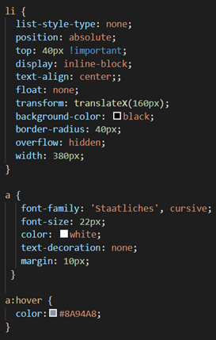

This website serves as a collection of interactive story pages where users can read and encounter different challenges as they scroll down the page. Each of the challenges they will see as they read the story will be related to the storyline in some way as they are asked to help the characters. Through this project, I also hope to introduce different stories from diverse perspective of other culture as well. In the future, I hope to expand the amount of stories that will be feature here.
**Before you read the story, please understand that this story takes a very dark turn in a morbid way.
Tấm Cám, in a way, is a Vietnamese adaptation of the fairy tale, Cinderella. However, this version of the story does take a dark turn, similar to the Grimms Brothers version of commonly known story of Cinderella. There are also other similar version of Cinderella all over the world, such as the South Korean "Kongjwi and Patjwi (콩쥐 팥쥐)".
For the final project, I decided to create a Bootstrap website that features stories as well as games in order to help readers feel more engaged as they explore the website. Originally, I only planned to make a single page for this project, which would contain the story and the games with it. However, the more I thought about it, the more I realize that by creating a general landing page, I could potential expand the website the future with more stories and games. This thought eventually led me to create what the website is now.
As I browsed through different sources of themes for the website, I encountered “Erase” (demo.themewagon.com/preview/free-bootstrap-4-html5-magazine-website-template-erase), which I found to be perfect for the purpose of the website in terms of layout th. I also really love how the overall theme looked. As a result, I did changed too much of the original theme other than font, color, pictures, and some of the sections from the theme. For this project, I also decided to do some JavaScript challenges to create the games. I chose the JS Clock, HTML5 Canvas, Whack-a-Mole from the JavaScript30. I also found online tutorials to do a Memory Card Game as well as a Speed Typing Game using JavaScript. As I was concern about potential obstacles I might encountered with the combination of Bootstrap and JavaScript, I did the JavaScript games on separate files and then linked and embeded them back on the main story page. Shown below is one of the challenge I embeded on the main story page.
I tried to organized the games in a way that would help it flow with the course of the story. The first game I created as part of this project is the Whack-a-Mole, in which I renamed it to “Catch a Fish”. For this challenge, I experienced some difficulties as I followed along with the tutorial. I ended having to redo all of my coding because the game didn’t quite work on my first attempt. I believe that it was due to the images I chose to replace the original mole and dirt with. In the process, of resizing the image, the changes I made might have cause certain elements to “break”. However, as I redid the code and chose new images (which did not needed to be resized), the game was able to work quite well. The next challenge I did was the HTML5 Canvas. As I worked on this challenge, I found it quite tricky to figure out how to alter the width of the pen stroke. If I were to improve upon this challenge in the future, I would like to find a way to add a color picker and an option for the user to pick a utensil (of different stroke width) to use. The next challenge (JS Clock) is not necessary a game, but I included it as I felt it relates to the story. With this challenge, I had the most challenge with getting all the components to align well together. However, I found that altering the margin and padding in CSS helps. For the Memory Card Game and Speed Typing Game, I found some tutorial on Youtube, which went over the process of how to do the coding like the videos on JavaScript30 did. Learning the JavaScript for these challenges was new and definitely something I could practice more in the future to become more familiarized with how to set up the functions and code overall. As the original version of the game was based on Halloween, I did have to find new images (though I left most of the class and CSS styling the same). I was able to gain a better understanding of which CSS element to target when I need to align components on a page. This was something I had to figure out when I was working on the navigation bar for the challenges. The links would either not move, move to the wrong place, or become stack on top of each other. After a while of trying out different, CSS elements, I was able to find the solution to the problem.
Overall, I am really proud of how the challenges turn out, mostly the Whack-a-Mole challenge, as I had the most struggle working on it. In the future, I would love to improve these challenge both in terms of its function and appearance.